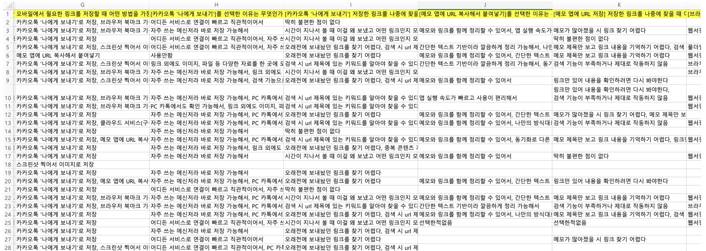
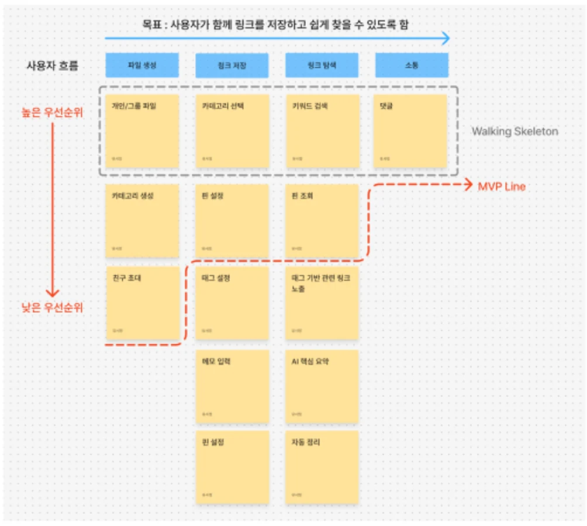
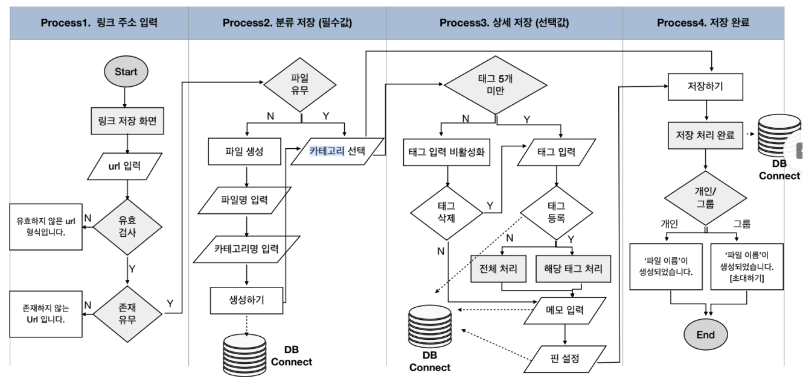
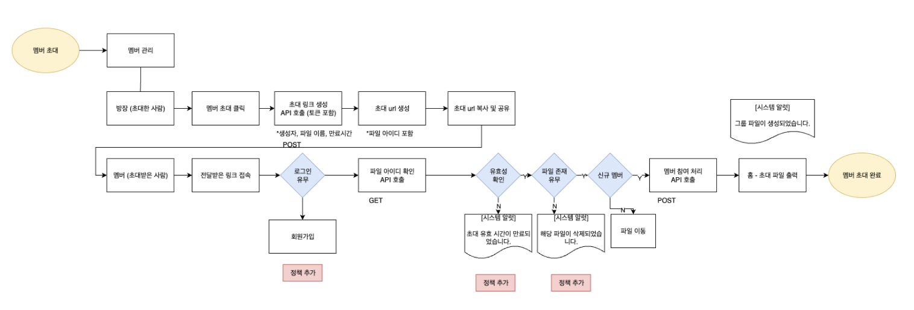

01발견한 문제
단톡방과 SNS에 흩어진 링크는 저장한 뒤 다시 찾기 어렵고, 여러 사람이 함께 보는 콘텐츠일수록 맥락이 사라졌습니다.
여럿이 콘텐츠를 저장하고 탐색하는 그룹 콘텐츠 아카이빙 앱
쏙은 흩어진 링크를 그룹 안에서 함께 저장·분류·공유하고, 필요할 때 빠르게 다시 찾도록 설계한 콘텐츠 아카이빙 앱입니다. PM으로 사용자 조사부터 MVP 범위, UX/UI·기능 설계와 출시 관리까지 리딩했습니다.
단톡방과 SNS에 흩어진 링크는 저장한 뒤 다시 찾기 어렵고, 여러 사람이 함께 보는 콘텐츠일수록 맥락이 사라졌습니다.
사용자에게 맞는 저장 구조와 그룹 단위의 공유 흐름을 제공하면, 콘텐츠를 다시 찾는 시간을 줄이고 재탐색 경험을 개선할 수 있다고 보았습니다.
설문 결과를 바탕으로 저장·카테고리·키워드·링크 탐색을 MVP로 우선순위화하고, 유저플로우·화면 설계·A/B 테스트로 검증했습니다.
문제 정의부터 출시까지, 서비스를 만들며 거친 순서대로 담았습니다.
콘텐츠를 저장할 때 74.8%가 SNS를 활용했고, 협업 시 링크를 카카오톡·인스타그램·디스코드 등 SNS에 저장하는 비율도 68.1%였습니다.
SNS에 저장한 콘텐츠를 다시 찾을 때 70.6%가 “어디로 보냈는지 기억이 안 난다”고 답했습니다.
“왜 여럿이서 링크를 저장할 수 있는 곳이 없지?”
여행 계획처럼 여럿이 링크를 모을 때 함께 저장하고 쉽게 찾을 수 있는 아카이빙 공간이 없다는 점을 문제로 인식했습니다.
출처: 쏙 사용자 설문 · 총 참여자 n=50 · 비율은 기존 리서치 요약 기준

어디로 보냈는지 기억이 안 나고
여러 플랫폼에
흩어짐
개인 · 그룹 파일한곳에 모으고 카테고리로 분류
채팅에 묻혀
다시 찾기 힘듦
키워드 검색 · 핀자주 보는 링크를 빠르게 재탐색
링크 내용을 알려면
일일이 열어 봐야 함
썸네일 · 제목 미리보기, AI 요약열기 전에 핵심을 식별
공유한 링크에 대해
따로 이야기하기 어려움
링크별 댓글링크 단위로 의견 나누기
링크를 저장하는 것보다,
저장한 콘텐츠를 나중에 다시 찾고 함께 활용하는 과정이
더 어렵다.
저장 과정의 입력 부담을 줄이고 콘텐츠를 구조화하면, 사용자는 더 빠르게 저장하고 필요할 때 쉽게 다시 찾을 수 있을 것이다.
출퇴근 시간에 여러 사이트에서 마케팅 정보글을 모으고, 업무에 참고할 글은 카카오톡 ‘나에게 보내기’로 전송해 두었다가 필요할 때 찾아봐요.
친구 5명과 3박 4일 제주도 여행을 계획하며 숙소, 맛집, 카페, 놀거리 링크를 각자 찾아 공유하고 있어요.
목표 — 정보를 효과적으로 분류해 저장하고, 나중에 쉽게 찾아 업무 흐름이 끊기지 않게 한다
| 단계 | 행동 | 감정 | 페인포인트 | 솔루션 |
|---|---|---|---|---|
| 1. 링크 발견 및 저장 | 브런치 글 탐색 → 여러 글을 카톡 ‘나에게 보내기’ | 호기심 → 안도감 | 링크만 전송되어, 어떤 내용인지·왜 보냈는지 알려면 다시 들어가 읽어야 함 | 링크 저장 시 제목 수정, 메모 기능 |
| 2. 카톡 접속 | 업무 중 참고하려고 나와의 채팅방 접속 | 안도감 → 혼란 | 여러 정보가 한곳에 쌓여 해당 링크를 찾기 어려움 | 중요·고정·나중에 볼 것 등 분류 기능 |
| 3. 링크 검색 | 키워드로 검색 | 혼란 → 불안, 불편 | 정확한 제목·내용을 입력해야 검색되고, 불필요한 텍스트까지 결과에 섞임 | 제목·내용·카테고리·태그·메모 통합 검색 |
| 4. 링크 파일 탐색 | 링크 파일에 접속해 스크롤로 탐색 | 불안, 불편 → 스트레스 최고조 | 주제가 다른 링크 사이에 분류 기능이 없어 찾을 때까지 스크롤 반복, 필요 없어진 링크도 함께 쌓임 | 파일·카테고리·태그 세분화, 주기적인 자동 정리 |
| 5. 링크 발견 | 링크를 열어 내용 확인 | 스트레스 → 지침, 피로 | 겨우 찾은 뒤에도 필요한 부분을 찾으려 여러 번 읽어 시간이 더 걸림 | AI 요약, 인사이트 제공 |
유저저니맵을 디자인 산출물의 기준으로 공유해, 기획과 디자인 사이의 UX/UI 의사결정 기준을 통일하고 협업 효율을 높였습니다.

| 사용자 흐름 | 기능 | 범위 | 사용자 요구사항 |
|---|---|---|---|
| 파일 생성 | 개인 / 그룹 파일 | MVP · 핵심 | 링크를 개인 또는 함께 쓰는 그룹 단위로 모은다 |
| 파일 생성 | 카테고리 생성 | MVP 이후 | 파일 안에서 주제별 카테고리를 만든다 |
| 링크 저장 | 카테고리 선택 | MVP · 핵심 | 저장할 때 파일과 카테고리를 지정한다 |
| 링크 저장 | 핀 설정 | MVP 이후 | 중요한 링크를 핀으로 표시한다 |
| 링크 저장 | 태그 설정 · 메모 입력 | MVP 이후 | 태그와 짧은 메모로 저장 맥락을 남긴다 |
| 링크 탐색 | 키워드 검색 | MVP · 핵심 | 저장한 링크를 키워드로 다시 찾는다 |
| 링크 탐색 | 태그 기반 관련 링크 · AI 핵심 요약 · 자동 정리 | MVP 이후 | 관련 링크를 이어 보고, 열기 전에 핵심을 파악한다 |
| 소통 | 댓글 | MVP · 핵심 | 링크 단위로 구성원과 의견을 나눈다 |
| 화면 ID | 구분 | 주 기능 | 처리 로직 | 입력값 | 출력값 | 예외 | 비고 |
|---|---|---|---|---|---|---|---|
| SSOK_LS_001 | 링크 저장 | 링크 입력 | URL 붙여넣기 → 형식 확인 → 주소 존재 여부 확인 → 미리보기 조회 | URL | 미리보기 또는 오류 안내 |
형식 오류: “유효하지 않은 URL 형식입니다” 없는 주소: “존재하지 않는 URL입니다” |
필수 입력 |
| SSOK_LS_002 | 링크 저장 | 제목 · 썸네일 추출 |
제목: og:title → og:description → <title>
→ og:url 썸네일: og:image → 본문 첫 번째 이미지 → 기본 썸네일 |
URL · 페이지 메타데이터 | 제목 · 썸네일 | 값이 없으면 다음 우선순위로 대체 | 사이트별 메타데이터 구조 고려 |
| SSOK_LS_003 | 링크 저장 | 분류 저장 |
파일 선택 → 카테고리 선택 분류 영역 선택 시 확대하고 상세 입력 영역은 접음 |
파일 · 카테고리 | 저장 위치 | 파일이 없으면 파일명 · 카테고리명 입력 후 생성 | 필수 입력 |
| SSOK_LS_004 | 링크 저장 | 상세 저장 | 필요한 경우에만 태그 · 메모 · 핀 설정 | 태그 · 메모 · 핀 여부 | 링크의 부가 정보 | 입력하지 않아도 저장 가능 | 선택 입력 |
| SSOK_LS_005 | 상세 저장 | 태그 입력 | 태그 이름 입력 후 Enter로 생성 | 태그 이름 | 생성된 태그 |
최대 5개 초과 시 “태그는 최대 5개 추가할 수 있어요” 안내 중복 태그는 미등록 |
선택 입력 |
| SSOK_LS_006 | 상세 저장 | 메모 입력 | 링크에 짧은 메모를 추가 | 메모 | 링크 메모 | 최대 20자 | 선택 입력 |
| SSOK_LS_007 | 상세 저장 | 핀 설정 | 토글로 핀 켜기 · 끄기 | 핀 여부 | 핀 설정 상태 | — | 기본값 꺼짐 |
| SSOK_LS_008 | 링크 저장 | 저장 완료 | 저장 처리 → 개인 / 그룹 파일 분기 → 완료 안내 | URL · 저장 위치 · 선택 입력값 | 저장된 링크 · 완료 안내 | 저장 실패 시 입력 내용 유지 | 파일 유형별 안내 |
| SSOK_GI_001 | 그룹 공유 | 그룹 초대 · 참여 |
초대 링크 → 랜딩페이지 → 앱 설치 · 진입 회원 / 비회원 분기 및 토큰 검증 후 참여 |
초대 토큰 · 딥링크 | 그룹 참여 | 회원 여부에 따라 진입 경로 분기 | 토큰 · 딥링크 기반 |
| SSOK_SE_001 | 링크 탐색 | AI 핵심 요약 | HTML 크롤링 → 본문 텍스트(<p>, <h1>–<h3>) 파싱 → GPT-4o 요청 → 링크 ID와 DB 저장 → 결과 노출 | 링크 ID · 본문 텍스트 | 핵심 요약 | 불러올 수 없는 링크는 오류 안내 |
하루 3회 제공 “별로예요 / 유용해요” 피드백 |


과업 수행 시간 평균 단축
미스클릭률 개선
협업형 링크 아카이빙 MVP를 출시하고, A/B 테스트로 저장 과업 수행 시간을 평균 44% 단축하고 미스클릭률을 23% 개선했습니다.
휴리스틱 평가와 설문, UT를 거쳤지만 개발 중에는 “이 경우에는 어떻게 처리하나요?”라는 질문이 반복됐습니다. 정상 흐름은 정의했어도 예외나 여러 조건이 겹치는 상황까지 고려하지 못한 탓이었습니다. 유저플로우와 별도로 플로우차트를 그리며 조건 분기를 구체화했고, 앞으로는 개발 전에 예외까지 함께 정의하려 합니다.
디자이너와 같은 화면을 보면서도 서로 중요하게 생각하는 기준이 달랐습니다. 유저저니맵으로 페인포인트를 정리하고 설문 결과를 함께 공유하면서 사용자 니즈를 기준으로 논의했습니다. 해석이 다른 부분은 UX/UI 전문가의 의견과 각자의 근거를 비교하며 방향을 조율했습니다.
변경 사항이 제대로 전달되지 않아 이전 기획안으로 개발이 진행된 경험이 있었습니다. 이후에는 변경 날짜와 이유, 배경을 문서화하고 Jira에서 일정과 화면별 변경 이력을 함께 관리했습니다. 팀이 최신 기획안을 기준으로 작업하고 변경 내용을 공유하는 과정도 수월해졌습니다.